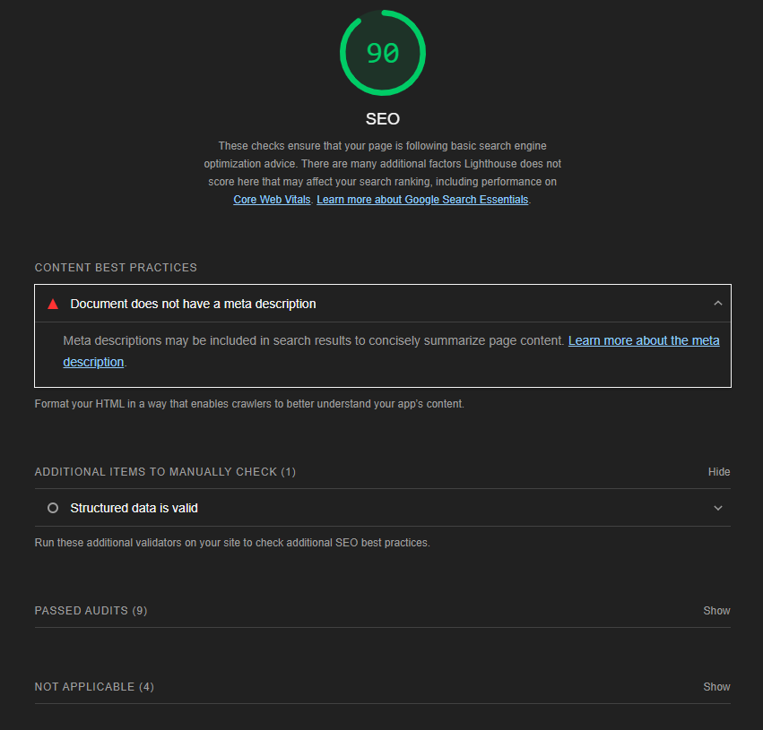
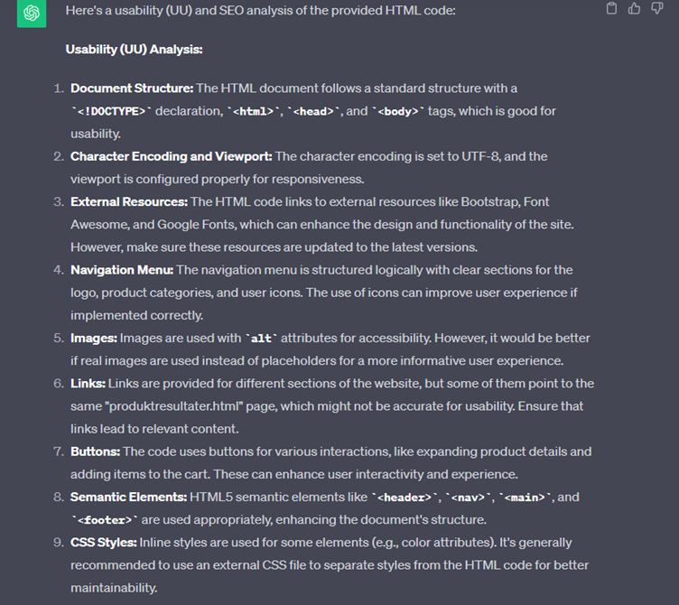

Analyse av nettsider fra oblig 3
Nøkkelord undersøkelse fra Google Trends
Jeg har brukt Google Trends for å identifisere søkeord som er relevante for skobutikken.
Under ser man søkeord jeg har valgt å fremheve og hvorfor.
-
Sko
I følge Google Trends er "sko" en av de mest relevante søkeordene for skobutikken.
"Sko" er jo et søkeord som er viktig for alle skobutikker i Norge.
Ordet blir søkt på ofte og jevnlig gjennom hele året.
I tillegg er "sko" relevant for skobutikkens geografiske målgruppe, altså Norge og nordmenn.
-
Vintersko
Vintersko er et søkeord som er viktig å bruke rundt vintersesongen.
Man ser nemlig på Google Trends at mange søker etter vintersko på denne tiden av året.
Vintersko har faktisk fått en "spike" i trafikk rundt vintertid de siste 5 årene.
Søkeordet er derfor populært å søke etter på den årstiden, og slik er søkeordet relevant.
Skobutikken har i tillegg Norge som sin geografiske målgruppe.
I Norge er varme sko om vinteren et behov, og dette søkeordet burde skobutikken ta nytte av.

-
Boots
Boots er et søkeord som er ganske populært i Norge.
Google Trends viser at Boots blir søkt på oftest om høsten og vinteren.
Denne trenden ble mer populært fra 2021 og utover.
Skobutikken burde utnytte populæriteten av denne skotypen under de årstidene.
Dette søkeordet kan gi god trafikk til nettbutikken og er derfor relevant. -
Sneakers
Sneakers er et søkeord som er viktig året rundt.
Google Trends viser at søkeordet Sneakers er mer populært enn Joggesko i Norge.
Andre resultater forteller også at Sneakers får mye trafikk året rundt,
med en liten avtagning rundt vinter. Sneakers har ganske stabil populæritet og trafikk.
Dette søkeordet er relevant for nettsiden på grunn av den stabile trafikken.
SEO analyse ved bruk av Lighthouse
Jeg har brukt Lighthouse for å analysere SEO av nettsidene til skobutikken.
Under ser man resultatene av Lighthouse analysene av SEO.
-
Forside
Lighthouse analysen av forsiden både på mobile og desktop ga gode SEO resultater.
Desktop fikk en score på 90 SEO, mens mobile fikk en score på 92 SEO.
Tilbakemeldingen på begge var at html-filen manglet en meta description.Resultater for Lighthouse SEO for desktop
Resultater for Lighthouse SEO for mobil
-
Produktresultater
Lighthouse analysen av produktresultater på desktop og mobile fikk en score på 90 og 89.
Desktop fikk en score på 90 SEO og fikk kun tilbakemelding om at den mangler meta description.
Mobile fikk en score på 89 SEO og mangler meta description.
I tillegg syntes Lighthouse at favoritt-hjertene på mobile versjonen er for små.Resultater for Lighthouse SEO for desktop
Resultater for Lighthouse SEO for mobil
-
Produkter
Lighthouse analysen av produktsiden på desktop og mobile fikk en score på 90 og 92.
Mobile fikk en score på 92, mens desktop fikk en score på 90.
Både desktop og mobile fikk tilbakemelding om at de mangler en meta description, men ikke noe annet.Resultater for Lighthouse SEO for desktop
Resultater for Lighthouse SEO for mobil
UU analyse ved bruk av Webaim
-
Forside
Forsidens resultater fra Webaim ga 7 errors, 1 contrast error og 12 alerts.
Contrast erroren peker på teksten "Se høstkolleksjonen 2023!".
De ønsker at teksten har en farge som kontraster mer med bakgrunnen,
eller at teksten har en bakgrunnsfarge for å øke lesbarheten.
De sier at søkebaren mangler en form label, og ellers er alertene relatert til
at nettsiden har manglende funksjonalitet. -
Produktresultater
Produktresultatsidens resultater fra Webaim ga 10 errors, 0 contrast error og 18 alerts.
De sier at søkebaren mangler en form label, og ellers er errorene relatert til
at nettsiden har manglende funksjonalitet. Alertene sier at siden mangler en h1,
at det er "redundant links" og at det er noen steder med "possible headings". -
Produkt
Produktsidens resultater fra Webaim ga 11 errors, 0 contrast error og 13 alerts.
De sier at søkebaren mangler en form label, og ellers er errorene relatert til
at nettsiden har manglende funksjonalitet. Alertene sier at siden mangler en h1,
at det er "redundant links" og at det er noen steder med "possible headings".
SEO og UU analyse ved bruk av ChatGPT
-
Forside
UU analysen sier at nettsiden er bra strukturert, og at UU er bra.
Mesteparten av kritikken er rettet mot at siden ikke er helt funksjonell,
som for eksempel at linkene peker til samme sted, eller at knappene ikke gjør noe.
Annet enn det kommenterer ChatGPT på UU analysen at det noen steder er brukt inline styling.
SEO analysen sier at title-taggen kan være mer deskriptiv, at det ikke er noen meta tags,
at linker peker til samme sted, at koden ikke har "internal anchor links",
og at det ikke er noe structured data som Schema.
Oppsummeringen til ChatGPT sier at HTML koden har bra struktur for UU,
og har SEO-vennlige elementer. ChatGPT sier at det er noen ting som kan forbedres relatert til SEO.Tilbakemelding på UU
Tilbakemelding på SEO
-
Produktresultater
UU analysen sier at nettsiden har bra UU, og kommentarene er veldig likt som til forsiden.
Altså kommenterer ChatGPT på manglende funksjonalitet på knapper, linker som sender til samme sted,
og at noen steder har det blitt brukt inline styling.
SEO analysen er ganske lik som for forsiden; resultatene sier at det mangler meta tags,
internal links og structured data.
Oppsummeringen til ChatGPT sier at UU er bra og at det er noen SEO-vennlige elementer.
Fremhevede kommentarer er å bruke deskriptive title tags, meta tags og structured data.Tilbakemelding på UU
Tilbakemelding på SEO
-
Produktside
UU analysen sier det samme som på de andre sidene, som at linker fører til samme sted og
at noen av bildene er placeholder bilder. Den nevner også at noen av knappene gir god interaktivitet
og opplevelse for brukere, som produkt-detaljer knappen og handlekurv-knappen.
SEO analysen har den samme tilbakemeldingen som de andre sidene, altså at det mangler
meta tags, title tagen burde være mer deskriptiv, og at det ikke er noe structured data.
Oppsummeringen til ChatGPT sier at UU er bra og har SEO-vennlige elementer.
Allikevel sier ChatGPT at koden trenger deskriptive titler og meta tags.
Andre kommentarer er relatert til at nettsiden mangler funksjonalitet.Tilbakemelding på UU
Tilbakemelding på SEO
Sammenligning av resultater
| Webaim | Lighthouse | ChatGPT | Felles | |
|---|---|---|---|---|
| SEO | Ingenting | Meta description, ha passende størrelse på tap targets | Meta tags, internal anchor links, structured data og beskrivende title-tags | Meta description/tags |
| UU | Ha nok kontrast for økt lesbarhet, mangler form label, tomme eller repetive links, tomme knapper, manglende h1 og mulige headers. |
Ha passende størrelse på tap targets | Unngå inline styling, repetive eller tomme linker, tomme knapper, god html-struktur, knapper med god brukervennlighet/som øker brukerinteraktivitet og brukeropplevelsen. |
Tomme knapper, repetetive eller tomme linker |
Forbedrende tiltak og nye analyser
Oppdaterte sider etter forbedrende tiltak
-
Forside
...
-
Produktresultater
...
-
Produktside
...